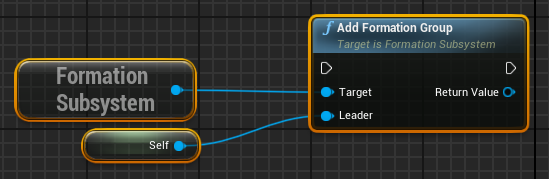
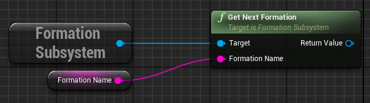
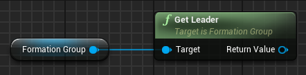

Formation System
Introduction
The Formation System allows you to easily add formations to your game. Make AI characters follow you in
formation, make groups move in formation, or use for any situation where you need characters to move
relative to each other such as cut-scenes or scripted events.
Example Project
The example project shows some example ways in which the system can be used. This is by no means an exhaustive list. Let your imagination decide your limits.
Link: Example Project
Formation Tool
An open source tool is provided to create custom formations, and export JSON that can be easily loaded by the Formation System.
Link: Formations Tool
Getting Started
Enable the Plugin
1. In the Unreal Editor, click Edit > Plugins

2. Search for the Formation System plugin in the Plugins Browser.

3. Check the Enabled box to enable the plugin.
Add the C++ Module
If you have a C++ project, add the FormationSystem module to your .build.cs file.
PublicDependencyModuleNames.AddRange(new string[] { "Core", "CoreUObject", "Engine", "InputCore", "HeadMountedDisplay", "FormationSystem" });
PrivateIncludePathModuleNames.AddRange(new string[] { "FormationSystem" });
Enjoy!
Now you're ready to use the Formation System. Let your imagination run wild.
Formation Member Component
The Formation Member Component identifies a controller as able to be a formation member that can be added to a Formation Group.
Note: The Formation Member Component must be added to a class derived from AController.
Add Formation Member Component (C++)
1. Add a property to hold the Formation Member Component
class FORMATIONSEXAMPLE_API AFormationsPlayerControllerBase : public APlayerController
{
GENERATED_BODY()
/** Formation Member Component */
UPROPERTY(VisibleAnywhere, BlueprintReadOnly, Category = "Formation System", meta = (AllowPrivateAccess = "true"))
UFormationMemberComponent* FormationMemberComponent;
2. Create the Formation Member Component as a subobject in the constructor.
AFormationsPlayerControllerBase::AFormationsPlayerControllerBase() : Super()
{
FormationMemberComponent = CreateDefaultSubobject(FName("FormationMemberComponent"));
}
Add Formation Member Component (Blueprints)
1. Create a Blueprint that derives from a Controller. (PlayerController or AIController)
2. In the Blueprint Editor, click the 'Add Component' button, search, and select the Formation Member Component.
3. Set component properties as desired.
Properties
DesiredLocation (Read Only)
The World Position where this formation member should be to be in formation.
DesiredFacing (Read Only)
A World Position that this formation member can use to look at, or set facing, to face the same direction as the leader.
Formation Group (Read Only)
Gets the Formation Group that this formation member belongs to. Can return an invalid object if not part of a group. Always use IsValid.
IsLeader (Read Only)
Whether or not this formation member is the group leader.
Position Update Enabled
Allows the component to automatically update the desired location and facing of this member in the current Formation Group.
If this property is set to false, then the DesiredPosition and DesiredFacing will not automatically update,
but can be updated manually by calling the UpdateDesiredPositionAndFacing function.
Position Update Interval
Sets the amount of time between automatic position updates.
Methods
As Formation Group Member
Returns a FFormationGroupMember structure that holds references to the Formation Member Component and the owning Controller.
Create Formation Group
Create a new Formation Group with the current component as the formation leader.
Is In Formation
Checks if the Formation Member is in a Formation Group and, if so, returns the Formation Group.
Leave Group
 Remove the Formation Member from it's current Formation Group.
Set Group
Sets the current Formation Group of the Formation Member. If the Formation Member is already part of a group,
it will be removed from it's existing group before being added to the new group.
Remove the Formation Member from it's current Formation Group.
Set Group
Sets the current Formation Group of the Formation Member. If the Formation Member is already part of a group,
it will be removed from it's existing group before being added to the new group.
Events
Notify Join Formation
Fired when this Formation Member joins a Formation Group.
Notify Leave Formation
Fired when this Formation Member leaves a Formation Group.
Formation Subsystem
The Formation Subsystem is a Game Instance Subsystem that manages available Formations and Formation Groups.
Reference (C++)
The Formation Subsystem can be retrieved in any place that can get a reference to the Game Instance using the static
templated method GetSubsystem on the UGameInstance class.
UFormationSubsystem* FormationSubsystem = UGameInstance::GetSubsystem(GetGameInstance());
You can also get the subsystem directly from the GameInstance
UFormationSubsystem* FormationSubsystem = GetGameInstance()->GetSubsystem();
Reference (Blueprint)
The Formation Subsystem can be retrieved in any place that can get a reference to the Game Instance.
Properties
Default Formation Name (Read Only)
The name of the default formation used when Formation Groups are created.
Formation Groups
An array of the current Formation Groups.
Formations
A Map containing the current Formations keyed with the formation name.
Methods
Load Formations
Load formations from a DataTable specified by an Asset Reference string.
Get Formation Group
Look up the Formation Group for the specified Formation Member.
Add Formation Group

Create a new Formation Group with the specified Leader.
Remove Formation Group
Remove the specified Formation Group .
Get Formation Names
Gets an array of all the Formation names.
Get Formation
Gets a specific formation by name.
Get Next Formation

Gets the next Formation after the Formation with the specified name. This function is cyclic, meaning that if it reaches
the end of the Formation map, it will cycle back to the beginning.
Get Next Formation Name
Gets the next Formation name after the Formation with the specified name. This function is cyclic, meaning that if it reaches
the end of the Formation map, it will cycle back to the beginning.
Get Previous Formation
Gets the previous Formation before the Formation with the specified name. This function is cyclic, meaning that if it reaches
the beginning of the Formation map, it will cycle back to the end.
Get Previous Formation Name
Gets the previous Formation name before the Formation with the specified name. This function is cyclic, meaning that if it reaches
the beginning of the Formation map, it will cycle back to the end.
Formation Group
The Formation Group manages formation group members and the groups current formation.
A Formation Group has one Leader and many Followers. Any method that deals with a 'Follower' does not include the Leader.
Methods
Add Follower
Add a Formation Member to the Formation Group.
Get Follower
Get the Formation Member at the specified index.
Get Follower Count
Get the number of Formation Members in this Formation Group.
Get Follower Index
Get the index of the specified Formation Member.
Get Follower Relative Position
Get a position Vector, that is relative to the leader, for the specified Formation Member.
Get Follower World Position
Get a World Location Vector for the specified Formation Member.
Get Followers
Get an array containing FormationGroupMember structures of all Formation Members.
Get Formation
Get the current Formation used by this group.
Get Leader
Get a Controller reference to the Leader of this Formation Group.

Get Leader Pawn
Get a Pawn reference for the Leader of this Formation Group.
Has Follow
Checks if the specified Formation Member is part of this Formation Group.
Next Formation
Cycle the Formation Group's current formation to the next Formation in the Formation Subsystem.
Previous Formation
Cycle the Formation Group's current formation to the previous Formation in the Formation Subsystem.
Remove Follower
Remove the specified Formation Member from the Formation Group.
Remove Followers
Remove all Formation Members from the Formation Group.
Remove Leader
Remove the current Leader from the Formation Group. A new Leader will be promoted from the Followers. If no Followers
remain, the Formation Group will be removed from the Formation Subsystem and destroyed.
Set Formation
Set the current Formation of the Formation Group.
Set Leader
Set the Leader for this Formation Group. This replaces any existing Leader.
Formation
The Formation stores a list of all available positions relative to the group leader. The first postition (index 0) should always be a ZeroVector representing the leader's position.
Properties
Is Default
Get or Set whether or not this Formation is the default Formation.
Name
Get or Set the Formation Name
Positions
Get or Set an array of Vectors holding the relative positions in this Formation.
Methods
Get Position
Gets the position Vector at the specified index.
Has Position
Checks if a position is defined for the given index.
Is Empty
Checks if there are no positions defined.

Formation Group Member Struct
The Formation Group Member structure just holds references to the Controller and Formation Member Component
for ease of access in certain places.